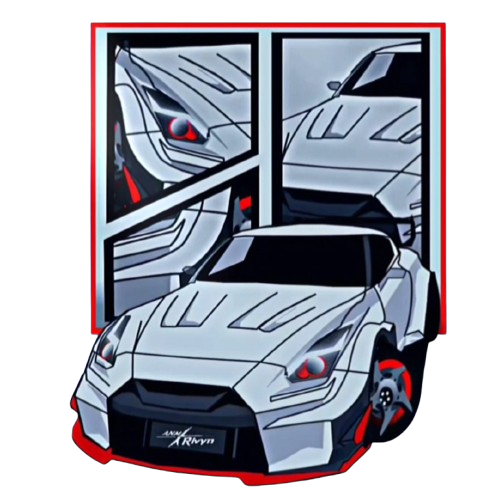

...
Website Futuristik Profesional - Mobile Optimized
Home
About
Social
Selamat Datang Wibu Hengker Tzy
hidup jokowi ✊🏻✊🏻✊🏻...

"Masih pemula puh 😅"
Ikuti Saya
TikTok
Gmail
Facebook
Instagram


Ikuti Saya